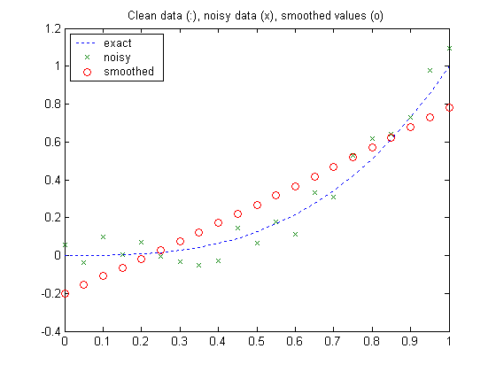
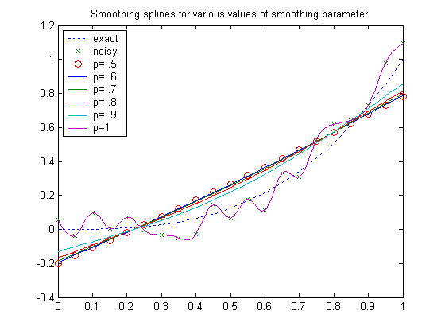
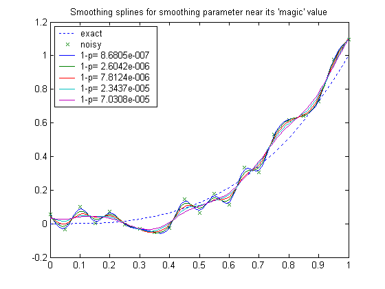
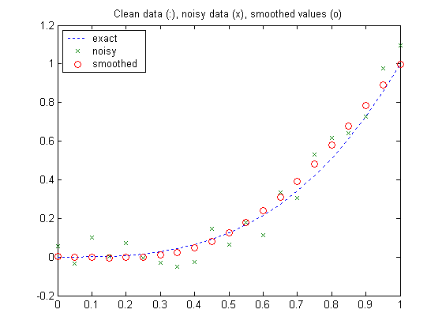
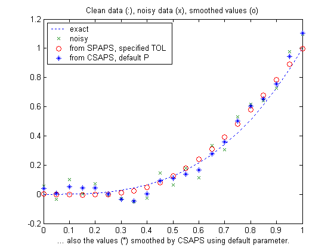

Cubic smoothing spline
Illustration of the use of CSAPS and SPAPS.
Copyright 1987-2003 C. de Boor and The MathWorks, Inc. $Revision: 1.18 $
Overview
The spline toolbox command CSAPS provides the s m o o t h i n g spline. This is a cubic spline that more or less follows the presumed underlying trend in noisy data. A smoothing parameter, to be chosen by you, determines just how closely the smoothing spline follows the given data. Here is the basic information, an abbreviated version of the online help:
%CSAPS Cubic smoothing spline. % % VALUES = CSAPS( X, Y, P, XX) % % Returns the values at XX of the cubic smoothing spline for the % given data (X,Y) and depending on the smoothing parameter P, chosen from % the interval [0 .. 1] . This smoothing spline f minimizes % % P * sum_i W(i)(Y(i) - f(X(i)))^2 + (1-P) * integral (D^2 f)^2 %
Example: noisy data from a cubic polynomial
Here are some trial runs. We start with data from a simple cubic, q(x) := x^3, contaminate the values with some noise, and choose the value of the smoothing parameter to be .5 , and plot the resulting smoothed values (o), along with the underlying cubic (:), and the contaminated data (x):
q = inline('x.^3'); xi = [0:.05:1]; yi= q(xi); ybad = yi+.3*(rand(size(xi))-.5); ys = csaps(xi,ybad,.5,xi); plot(xi,yi,':',xi,ybad,'x',xi,ys,'ro'),grid off title('Clean data (:), noisy data (x), smoothed values (o)') legend('exact','noisy','smoothed',2)
The smoothing is way overdone here. By choosing the smoothing parameter p closer to 1, we obtain a smoothing spline closer to the given data.
We try p = .6, .7, .8, .9, 1 , and plot the resulting smoothing splines.
We see that the smoothing spline is very sensitive to the choice of the smoothing parameter. Even for p =.9 , the smoothing spline is still far from the underlying trend while, for p = 1, we get the interpolant to the (noisy) data.
xxi = [0:100]/100; hold on nx=length(xxi);yy=zeros(5,nx); for j=1:5 yy(j,:) = csaps(xi,ybad,.5+j/10,xxi); end plot(xxi,yy) title('Smoothing splines for various values of smoothing parameter') legend('exact','noisy','p= .5','p= .6','p= .7','p= .8','p= .9','p=1',2) hold off
In fact, the formulation from p.235ff of PGS used here is very sensitive to scaling of the independent variable. A simple analysis of the equations used shows that the sensitive range for p is around 1/(1+epsilon) , with epsilon := h^3/16 , and h the average difference between neighboring sites. Specifically, one would expect a close following of the data when p = 1/(1+epsilon/10) and some satisfactory smoothing when p = 1/(1+epsilon*10) .
The next slide shows the smoothing spline for values of p near this magic number 1/(1+epsilon).
For this case, it is more informative to look at 1-p since the magic number, 1/(1+epsilon), is very close to 1; see the last calculation below.
epsilon = max(diff(xi))^3/16; plot(xi,yi,':',xi,ybad,'x'), grid off hold on, labels = cell(1,5); for j=1:5 p = 1/(1+epsilon*3^(j-3)); yy(j,:) = csaps(xi,ybad,p,xxi); labels{j} = ['1-p= ',num2str(1-p)]; end plot(xxi,yy) title('Smoothing splines for smoothing parameter near its ''magic'' value') legend('exact','noisy',labels{1},labels{2},labels{3},labels{4},labels{5},2) hold off 1 - 1/(1+epsilon)
ans = 7.8124e-006
In this example, choosing the smoothing parameter near the magic number seems to give the best results. To be sure, the noise is so large here that we have no hope of recovering the exact data to any accuracy.
You can also supply CSAPS with error weights, to pay more attention to some data points than others. Also, if you do not supply the evaluation sites XX, then CSAPS returns the ppform of the smoothing spline.
Finally, CSAPS can also handle vector-valued data and even multivariable, gridded data.
The cubic smoothing spline provided by the spline toolbox command SPAPS differs from the one constructed in CSAPS only in the way it is selected.
Here is an abbreviated version of the online help for SPAPS:
%SPAPS Smoothing spline. % % [SP,VALUES] = SPAPS(X,Y,TOL) returns the B-form and, if asked, the % values at X , of a cubic smoothing spline f for the given data % (X(i),Y(:,i)), i=1,2, ..., n . % % The smoothing spline f minimizes the roughness measure % % F(D^2 f) := integral ( D^2 f(t) )^2 dt on X(1) < t < X(n) % % over all functions f for which the error measure % % E(f) := sum_j { W(j)*( Y(:,j) - f(X(j)) )^2 : j=1,...,n } % % is no bigger than the given TOL. % Here, D^M f denotes the M-th derivative of f . % The weights W are chosen so that E(f) is the Composite Trapezoid Rule % approximation for F(y-f). % % f is constructed as the unique minimizer of % % rho*E(f) + F(D^2 f) , % % with the smoothing parameter RHO so chosen so that E(f) equals TOL . % Hence, FN2FM(SP,'pp') should be (up to roundoff) the same as the output % from CPAPS(X,Y,RHO/(1+RHO)).
Tolerance vs smoothing parameter
It may be easier to supply a suitable tolerance than the smoothing parameter P required by CSAPS. In our earlier example, we added uniformly distributed random noise from the interval 0.3*[-0.5 .. 0.5]. Hence we can estimate a reasonable value for TOL as the value of the error measure E at such noise. The graph shows the resulting smoothing spline constructed by SPAPS. Note that I specified the error weights to be uniform, which is their default value in CSAPS.
tol = sum((.3*(rand(size(yi))-.5)).^2); [sp,ys] = spaps(xi,ybad,tol,ones(size(xi))); plot(xi,yi,':',xi,ybad,'x',xi,ys,'ro'),grid off title('Clean data (:), noisy data (x), smoothed values (o)') legend('exact','noisy','smoothed',2)
Here, in addition, is also the smoothing spline provided by CSAPS when not given a smoothing parameter, in which case the parameter is chosen by a certain ad hoc procedure that attempts to locate the region where the smoothing spline is most sensitive to the smoothing parameter.
hold on plot(xi,fnval(csaps(xi,ybad),xi),'*') legend('exact','noisy','from SPAPS, specified TOL','from CSAPS, default P',2) xlabel(' ... also the values (*) smoothed by CSAPS using default parameter.') hold off
In addition to the different ways, smoothing parameter vs tolerance, in which you specify a particular smoothing spline, these two commands differ also in that SPAPS, in addition to the cubic smoothing spline, can also provide a linear or a quintic smoothing spline.
The quintic smoothing spline is better than the cubic smoothing spline in the situation when you would like the second derivative to move as little as possible.